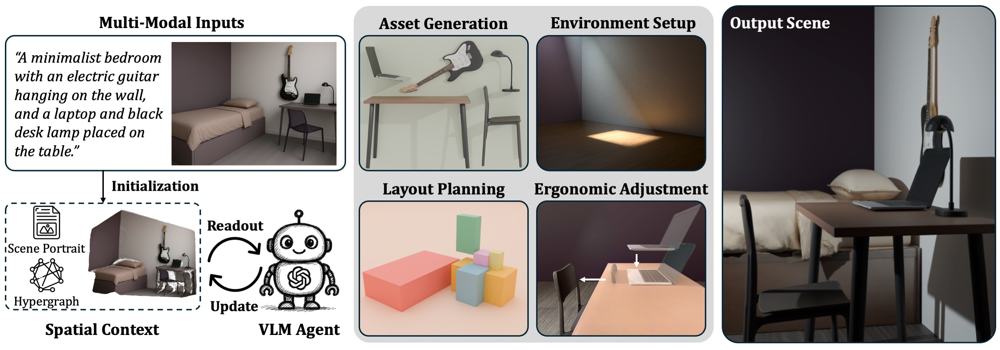
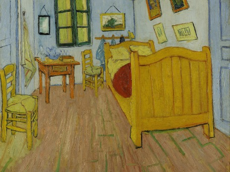
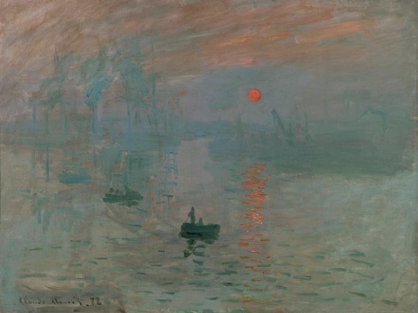

Agentic 3D Scene Generation with Spatially Contextualized VLMs
Abstract
Despite recent advances in multimodal content generation with vision-language models (VLMs), their ability to reason about and generate structured 3D scenes remains underexplored—limiting their potential in tasks like embodied AI, immersive simulations, and interactive 3D environments. We introduce a new paradigm that augments VLMs with a continually evolving spatial context, composed of a scene portrait, a semantically labeled point cloud, and a scene hypergraph capturing unary, binary, and higher-order spatial relationships. This structured, geometry-aware memory allows VLMs to integrate multimodal reasoning with 3D spatial understanding. Building on this foundation, we develop an agentic 3D scene generation pipeline that iteratively reads from and updates the spatial context. The pipeline includes high-quality asset generation with geometric restoration, environment setup with automatic verification, and ergonomic adjustment guided by the hypergraph. Experiments show strong generalization across diverse and challenging inputs, and demonstrate that spatial context enables downstream tasks such as interactive scene editing and path planning.
Spatially Contextualized VLMs
Our framework equips vision-language models (VLMs) with a structured spatial context that integrates multimodal cues to establish a grounded understanding of a scene’s semantics, layout, and object relationships. This context is initialized using the user’s multimodal input, which may include one or more images, textual descriptions, or both. It consists of the following components:
- Scene portrait: A high-level representation of the scene, including a detailed textual description of the layout, objects, style, and atmosphere, along with an image that serves as a visual proxy.
- Semantically labeled point cloud: A colored point cloud generated from the scene portrait image(s) using a geometric foundation model. Each 3D point is assigned an RGB value and an instance label based on object masks.
- Scene hypergraph: A structure representing spatial relationships. Nodes correspond to object instances, while hyperedges encode unary (e.g., clearance), binary (e.g., contact, alignment), and higher-order (e.g., equidistance, symmetry) spatial relations.
The spatial context is dynamic—it undergoes iterative readout and update as the scene evolves. The VLM actively consults the spatial context to guide tasks such as asset generation and layout refinement. When changes are needed, it triggers a replacement or adjustment of relevant components to ensure the spatial context remains coherent and up-to-date for all subsequent reasoning and generation steps.
Agentic 3D Scene Generation
With vision-language models (VLMs) injected with spatial context, we introduce an agentic framework for 3D scene generation, where the VLM actively consults the context to guide scene synthesis and dynamically refines it to reflect ongoing changes in the environment.
- Asset Generation: For each object in the scene hypergraph, the VLM extracts its point cloud segment and, if incomplete, restores it using a lightweight geometric module. The segment is rendered from a canonical view and passed to a mesh generator to produce a textured 3D asset.
- Layout Planning: Each generated mesh is aligned to its corresponding point cloud segment using centroid-based initialization and ICP-based refinement.
- Environment Setup: Based on whether the scene is indoor or outdoor, the VLM generates Blender code to construct elements such as walls, terrain, lighting, and sky. An auto-verification loop renders the scene and triggers code refinements to resolve mismatches with the spatial context.
- Ergonomic Adjustment: To correct inter-object collisions or awkward placements, the VLM jointly optimizes object poses to satisfy soft constraints like contact, alignment, and symmetry, ensuring the final arrangement is both functional and semantically coherent.
Gallery
Our approach supports diverse inputs—including text prompts, single images, and unstructured, unposed image collections—and produces coherent, semantically aligned 3D environments across a wide range of styles and settings.
Text-conditioned generation. Our method produces scenes that more faithfully preserve semantic alignment, spatial structure, and stylistic intent.
A Silicon Valley garage-style startup office.
Sherlock Holmes’s 221B Baker Street apartment.
竹外桃花三两枝，
春江水暖鸭先知。
(Beyond the bamboo, peach blossoms bloom,
The spring river warms — the duck knows soon.)
A dystopian set design reminiscent of Blade Runner 2049.
Image-conditioned generation. Our system effectively reconstructs spatial layouts and scene compositions, such as the tilted sofa in a living room, while preserving the stylistic integrity of iconic works like Van Gogh’s Bedroom in Arles.


Image set as input. Unlike prior methods, which are typically restricted to single-view inputs, our framework naturally accommodates unstructured and unposed image collections and consolidates geometric cues from diverse viewpoints into a coherent 3D layout.